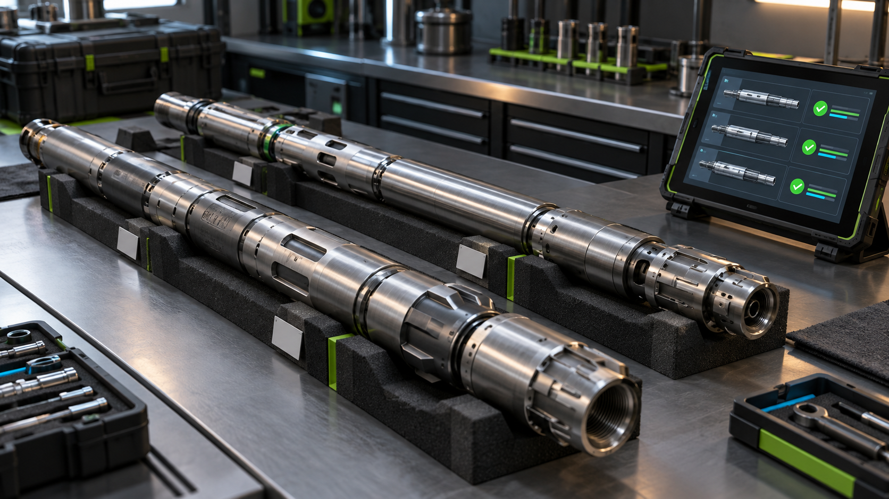
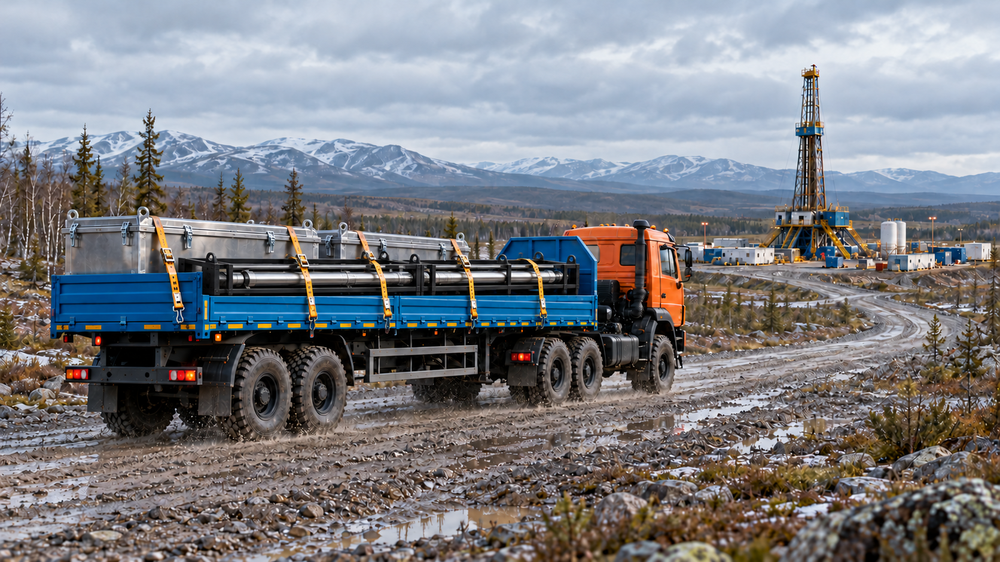
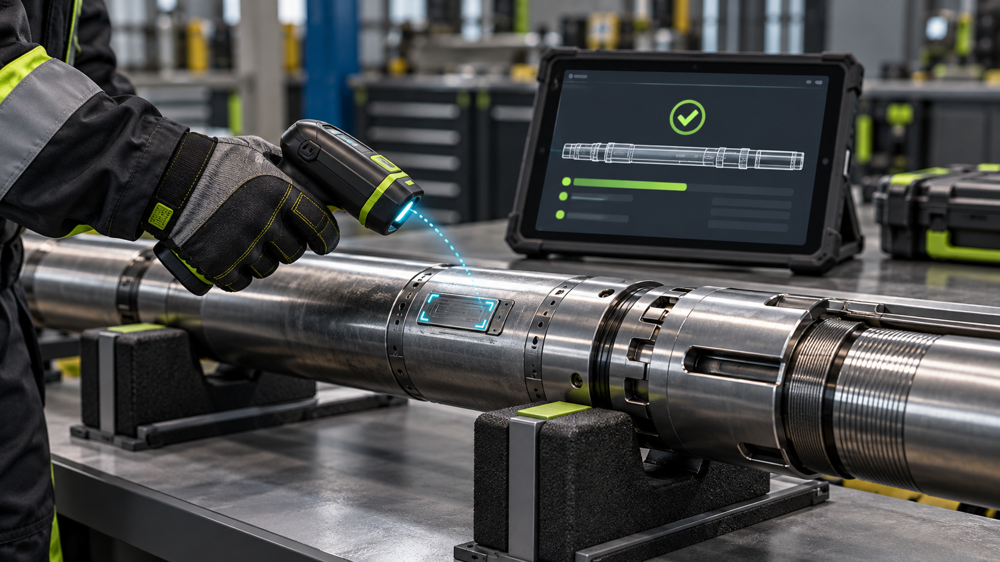
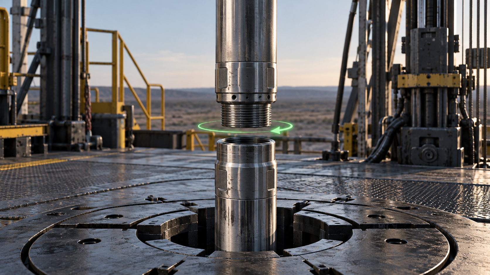
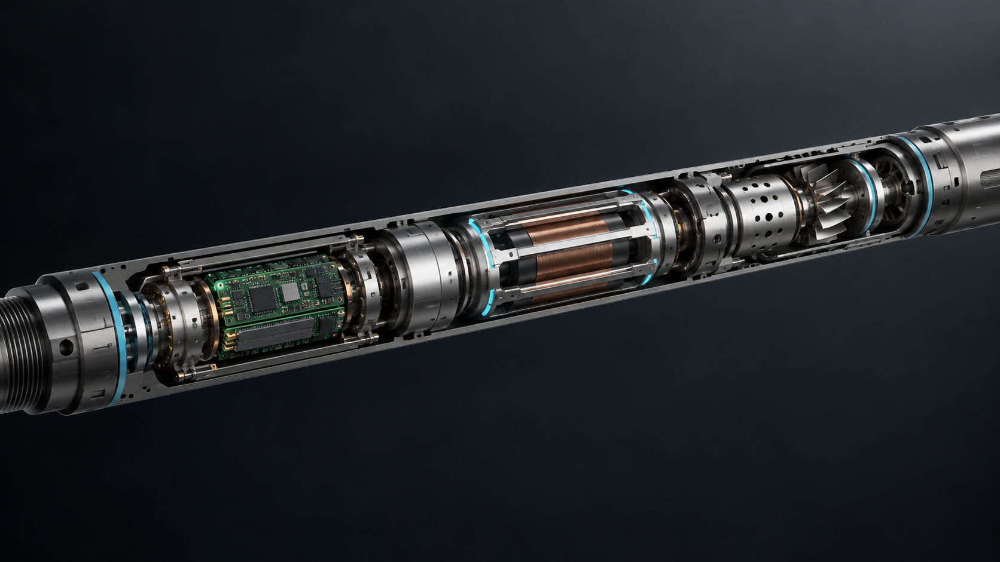
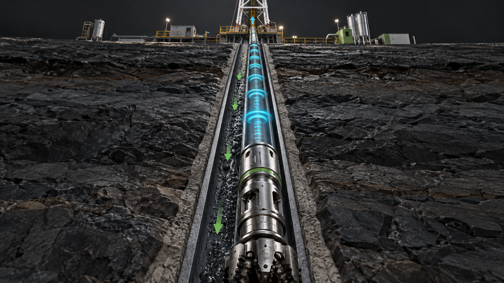
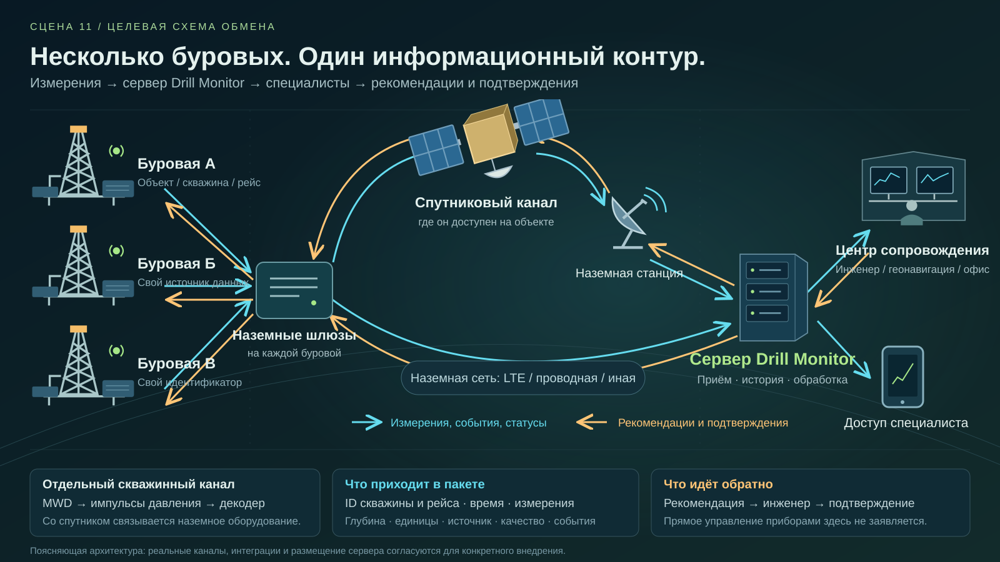
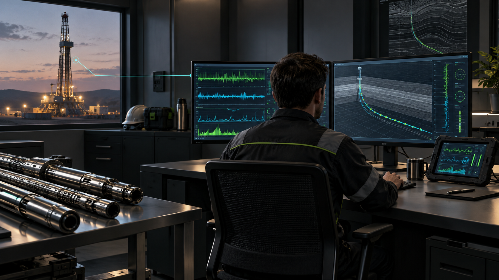
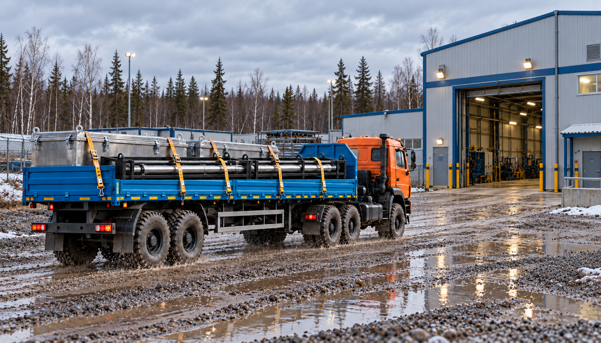

Основа изображения
BlenderПриборы, сборка, сканер, КНБК, долото, скважина, близкие планы груза, логотип, камеры и опорная геометрия сложных пролётов.
От фирменного логотипа и базы — к бурению, поверхности, космосу и контрольному центру. В центре истории — ваше оборудование, ваше ПО, масштабирование и инженер, который управляет процессом.
Приборы, сборка, сканер, КНБК, долото, скважина, близкие планы груза, логотип, камеры и опорная геометрия сложных пролётов.
Монтаж, совмещение слоёв, реальные экраны, маски, линии данных, титры, цвет, озвучка, звук и скрытые склейки.
Облака, дальние пейзажи и атмосферные планы, где не требуется точная конструкция оборудования. Сгенерированные кадры проходят отбор и ручную проверку.
Утверждённая 3D-модель рендерится отдельно и остаётся точным слоем в композиции. Для близкого взаимодействия — погрузки, соединения секций и бурения — используем контролируемую сцену. ИИ может готовить окружение, но сохранность геометрии при генерации целого видео по одному рендеру не гарантируется.
Практический путь: Blender → последовательность кадров PNG с прозрачностью или OpenEXR → сборка со слоями окружения и интерфейса в Fusion → монтаж и звук. При сильном движении камеры фон, перспектива, свет и тени должны быть согласованы; для таких кадров предпочтительнее 3D-окружение.
Буровая → облако со скрытой склейкой → карта / глобус и лучи данных → снижение к центру → склейка по окну или экрану → интерьер. Так сохраняются точки привязки, масштаб и направление камеры. Все части заранее собираются в черновом монтаже.
| Время | Эпизод | Производство |
|---|---|---|
| 00:00–00:08 | 01 · Логотип: появление и переход к оборудованию | Blender + монтаж |
| 00:08–00:26 | 02 · База: комплектование и погрузка | Blender + фон / композитинг |
| 00:26–00:44 | 03 · Дорога и прибытие на буровую | Blender + атмосферные ИИ-вставки |
| 00:44–00:59 | 04 · Считывание и сверка приборов | Точная 3D-анимация + экран ПО |
| 00:59–01:19 | 05 · Быстрая сборка секций и локальная связь | Точная 3D-анимация + графика |
| 01:19–01:51 | 06 · Спуск, долото и бурение | Blender: оборудование и разрез скважины |
| 01:51–02:16 | 07 · Линия данных поднимается на поверхность | Blender + управляемая графика |
| 02:16–02:38 | 08 · Инженерный вагон: приём и обработка | Реальный интерфейс + композитинг |
| 02:38–03:08 | 09 · От одной буровой к масштабу сети | Blender / 2.5D + Fusion + карта |
| 03:08–03:30 | 10 · Контрольный центр: камера входит к инженеру | Окружение + реальные экраны + Fusion |
| 03:30–04:05 | 11 · ИИ выполняет рутину, инженер контролирует | Графика + концепция автоматизации |
| 04:05–04:23 | 12 · Рекомендация возвращается на буровую | ПО + графика обратной связи |
| 04:23–04:43 | 13 · История оборудования продолжается | Существующие кадры + ПО |
| 04:43–04:55 | 14 · Финальный логотип и масштаб экосистемы | Логотип + повтор графики + звук |
Это подтверждённая для сценария целевая концепция. В эпизоде сохраняется титр «Целевая автоматизация · в разработке». Проверка полноты, сводки и черновики отчётов показываются как планируемые задачи. Инженерное математическое ядро и ИИ-помощник различаются; результат контролирует специалист.
В темноте световой контур собирает фирменный логотип. Он становится объёмным, получает блик и уходит из кадра. Блик продолжает движение по металлическому китбоксу на базе.
Анимировать точный векторный логотип или утверждённую модель. Свет, камера, свечение и исчезновение — управляемые эффекты. Финальную геометрию логотипа сохраняем.
Блик / край логотипа → блик на крышке китбокса; склейка по форме и движению.
ГеоТехНавигация. Оборудование, данные и инженерные решения в одном рабочем контуре.
Точный логотип и надписи. Исходник фирменного знака нужен до финального рендера.

На базе готовят комплект. Телеметрия лежит в открытом металлическом китбоксе, трубные приборы — в каркасных корзинах. Крышка закрывается; груз размещают и закрепляют на синем бортовом полуприцепе.
Ваше оборудование, кейсы, корзины, близкий план машины и взаимодействие при погрузке — 3D. Для дальнего окружения возможен подготовленный фон. Свет и контактные тени согласуются в сцене.
Движение погрузки заканчивается движением машины; сохраняются ракурс, груз и направление.
Работа начинается на базе: подготовка телесистемы, проверка комплекта и отправка на объект. Каждому прибору соответствует своя история в Drill Monitor.
Реальные модели, габариты китбокса и корзин, постоянство состава и размещения груза.

Оранжевый тягач с тем же синим полуприцепом движется по дороге. Общий план раскрывает буровую. Машина въезжает на площадку, оборудование передают полевой команде.
Для крупных кадров, в которых читаются груз и конструкция машины, используем управляемую 3D-сцену. ИИ допустим для отдельных дальних пейзажных вставок без необходимости точно воспроизвести оборудование.
Передача оборудования → прибор на рабочем месте инженера.
Подготовленный комплект доставляют на буровую. Приёмка связывает физическое оборудование с конкретной скважиной и предстоящим рейсом.
Один тягач, один полуприцеп, те же китбоксы и корзины в последовательных кадрах.

Инженер подносит сервисный сканер к оборудованию. Приборы последовательно подсвечиваются, а в реальном интерфейсе появляются их идентификаторы и состав цифровой компоновки.
Сканер и приборы рендерятся из моделей. Информационные выноски и запись интерфейса добавляются отдельными слоями. Движение сканера и место считывания сверяются с реальным процессом.
Выделенная секция в цифровой компоновке → та же секция в крупном 3D-плане.
Беспроводное считывание помогает сверить состав оборудования. Физические приборы и цифровая компоновка относятся к одному рейсу.
Форма сканера, серийные номера и реальный состав. Сервисное считывание показано отдельно от межсекционного обмена.

Две секции сходятся в контролируемом крупном плане. Видно быстрое соединение. После сборки отдельная графика показывает беспроводной обмен между секциями.
Анимация по реальной геометрии и кинематике соединения. Сигнал между секциями — поясняющий слой, без вымышленных частот, дальностей и внутренней конструкции.
Собранная телесистема поворачивается по оси → та же компоновка начинает спуск.
Двухсекционная конструкция упрощает подготовку на объекте. После соединения секции работают в общей компоновке; локальный обмен связывает их электронные модули.
Стык, резьбы, размеры и положения узлов. Показ беспроводной межсекционной связи основан на описании пользователя; параметры уточняются.

Компоновка уходит в скважину. Камера следует за ней и раскрывает условный разрез. Долото вращается и разрушает породу; выше него видно оборудование в согласованной КНБК.
Скважина, КНБК, инструмент и движение камеры — управляемая 3D-сцена. Реальные приборы сохраняются. Геология и разрушение породы используются как поясняющая визуализация.
От движения долота и измерительного узла → к формированию телеметрического сигнала.
В скважине оборудование становится частью бурильной компоновки. Во время бурения измерительные модули получают данные ориентации и доступные геофизические каналы. Так формируется информация о ходе рейса и положении инструмента.
Геометрия оборудования, порядок модулей и согласованная КНБК. Наличие модели долота и точный состав сцены проверить до производства.

Пульсатор кодирует измерения. Условная линия сигнала проходит вверх по скважине к датчику давления и наземному декодеру. Сигнал превращается в структурированные значения.
Отдельно показываем движение раствора и распространение импульсов давления. Поясняющая линия ведёт взгляд камеры, затем становится графиком и пакетом данных.
Выход декодера → кабель / графическая линия → экран в инженерном вагоне.
Измерения передаются к поверхности импульсами давления. Наземный комплекс принимает и декодирует сигнал. Значения получают привязку ко времени, глубине, скважине и рейсу.
Этот канал гидравлический. Свечение — визуальная метафора; спутниковой связи непосредственно со скважинным прибором здесь нет.
Камера входит в инженерный вагон. Специалист видит поступающие каналы, графики и состояние рейса на экране Drill Monitor. Выделяются несколько читаемых показателей и одно событие.
Запись действующего интерфейса накладывается на экран. Вагон и инженер — 3D, согласованная съёмка или отдельный подготовленный фон. Важные значения и все подписи остаются точными.
От экрана линия данных проходит к наземному каналу связи; камера выходит из вагона и поднимается над буровой.
На буровой Drill Monitor собирает данные в рабочую картину рейса. Инженер сопоставляет показатели, контролирует качество сигнала и видит изменения режима.
Экран записывается из ПО. Демонстрационные данные обозначаются, интерфейс и цифры не генерируются нейросетью.

Камера поднимается от этой буровой через облака к условной карте Земли. Появляются другие объекты. Лучи визуализируют передачу данных через доступные наземные и спутниковые каналы к общему центру.
Одна буровая → скрытая склейка в облаке → отдельный пролёт над картой / глобусом → линия данных к центру. Камеры и опорные точки задаются в Blender или управляемой композиции; облака могут быть ИИ-вставкой.
Снижение к контрольному центру; ещё одна скрытая склейка по зданию, окну или тёмному краю экрана.
Та же информация доступна за пределами площадки. Несколько буровых объединяются в общий контур сопровождения. Потоки сохраняют привязку к своим объектам, а специалисты получают обзор и возможность работать с каждой скважиной отдельно.
Карта показывает принцип масштабирования, а не подтверждённое число внедрений. Лучи — информационные связи, каналы подробно раскрыты в отдельной схеме.

Камера спускается к центру и оказывается внутри. На нескольких мониторах — общая сводка объектов, выбранный рейс, план–факт траектории и доступные каротажные данные. Инженер наблюдает.
Интерьер — управляемая сцена или подготовленная вставка. Содержимое мониторов — реальные записи или явно обозначенные макеты. Связать масштабную карту с тем же выбранным рейсом.
Переход к нескольким повторяющимся операциям в интерфейсе: их подхватывает слой автоматизации.
В центре сопровождения инженер видит общую ситуацию и может перейти к конкретному рейсу: от параметров бурения до траектории и геонавигационных данных.
Экраны в текущем концептуальном кадре условные. В финале — согласованные интерфейсы, без вымышленных клиентов и внедрений.
Постоянный титр «Целевая автоматизация · в разработке». Повторяющиеся задачи собираются в очередь: проверка полноты, сводка событий, черновик отчёта, подготовка информации для решения. Инженер проверяет результат.
Управляемая инфографика и макеты. Проверяемые расчёты выполняет математическое ядро; ИИ помогает с повторяющейся обработкой и представлением данных. Любые готовые функции отдельно подтверждаются.
Система подготовила информацию → инженер принимает и оформляет решение.
Цель развития комплекса — передать повторяющиеся операции автоматизации и ИИ: проверку данных, подготовку сводок и черновиков отчётов. Инженерное ядро выполняет проверяемые расчёты. Специалист контролирует результат, оценивает ситуацию и принимает ответственное решение.
Это согласованная пользователем целевая концепция, а не перечень уже выпущенных ИИ-функций. Не показывать автономное управление бурением.
Инженер уточняет задачу или план и отправляет рекомендацию полевой команде. Обратная линия возвращает её на ту же буровую. Появляются подтверждение получения и ответ.
Графический обмен с привязкой к скважине, рейсу и событию. Уточнение плана и рекомендации обозначаются как действия специалиста. Реализацию сообщений подтвердить до финальной записи.
Подтверждённое событие сохраняется в общей истории рейса и оборудования.
Подготовленная информация превращается в рекомендацию полевой команде. Получение и принятое решение фиксируются в общем контексте скважины. Инженер остаётся в центре процесса.
Обратный поток — рекомендации и подтверждения, как выбрано пользователем. Команды оборудованию и автоматическое изменение режима не заявляются.

Короткий эпилог исходного сценария: тот же комплект возвращается на базу. Приёмка и обслуживание связываются с паспортом, наработкой и следующим рейсом.
Повторно использовать согласованный транспортный кадр и реальные экраны паспорта. Показать связь логистики и сервиса с завершённым рейсом; детализацию эпилога можно сократить при согласовании монтажа.
Сеть объектов и этапов собирается в финальную композицию экосистемы.
После рейса данные остаются в истории приборов. Возвращение, обслуживание и подготовка к следующей задаче продолжают единый жизненный цикл оборудования.
Логистика и сервис сохранены из прежнего задания. Сквозную автоматизацию каждого этапа не выдавать за подтверждённую реализацию.
Короткий общий вид: оборудование, Drill Monitor, буровые и центр сопровождения. Всё сходится в фирменный знак. Логотип появляется чисто, выдерживается и плавно исчезает.
Повтор логотипа и графики начала. Точные название и адрес, читаемая финальная пауза, звук и завершение дикторской фразы.
Затемнение и звуковое завершение.
ГеоТехНавигация. Своё оборудование, свой программный комплекс и единый контур инженерного сопровождения.
Корректный фирменный знак и согласованные формулировки. Без обещания подтверждённого масштаба внедрения.
Сначала собрать весь ролик в виде аниматика: простые камеры, черновые рендеры, временные экраны и озвучка. Затем довести один технический фрагмент до финального качества — например, считывание и сборку. После проверки геометрии, света и перехода переносить подход на остальные эпизоды.
Возможности инструментов: Вывод кадров BlenderКомпозиция и эффекты FusionПример ИИ-вставок: Runway image-to-video